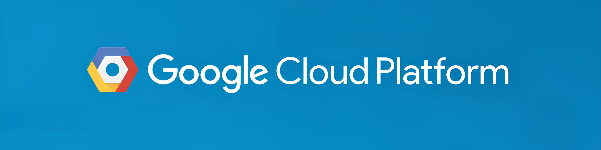
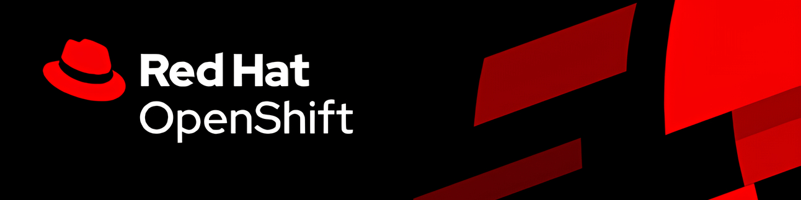
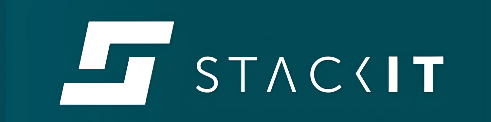
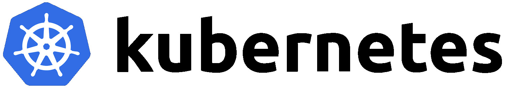

Solvio Hybrid Cloud: Hosting Platforms & Deployment Options
This page provides an overview of how to deploy Solvio Hybrid Cloud on various managed Kubernetes platforms.
For a general list of prerequisites and installation steps, see our Hybrid Cloud setup guide. This platform specific documentation also applies to Solvio Private Cloud.
Akamai (Linode)
The Linode Kubernetes Engine (LKE) is a managed container orchestration engine built on top of Kubernetes. LKE enables you to quickly deploy and manage your containerized applications without needing to build (and maintain) your own Kubernetes cluster. All LKE instances are equipped with a fully managed control plane at no additional cost.
First, consult Linode’s managed Kubernetes instructions below. Then, to set up Solvio Hybrid Cloud on LKE, follow our step-by-step documentation.
More on Linode Kubernetes Engine
At the time of writing, Linode does not support CSI Volume Snapshots.
Amazon Web Services (AWS)
Amazon Elastic Kubernetes Service (Amazon EKS) is a managed service to run Kubernetes in the AWS cloud and on-premises data centers which can then be paired with Solvio’s hybrid cloud. With Amazon EKS, you can take advantage of all the performance, scale, reliability, and availability of AWS infrastructure, as well as integrations with AWS networking and security services.
First, consult AWS’ managed Kubernetes instructions below. Then, to set up Solvio Hybrid Cloud on AWS, follow our step-by-step documentation.
For a good balance between peformance and cost, we recommend:
- Depending on your cluster resource configuration either general purpose (m6*, m7*, or m8*), memory optimized (r6*, r7*, or r8*) or cpu optimized (c6*, c7*, or c8*) instance types. Solvio Hybrid Cloud also supports AWS Graviton ARM64 instances.
- At least gp3 EBS volumes for storage
More on Amazon Elastic Kubernetes Service
Your EKS cluster needs the EKS EBS CSI driver or a similar storage driver:
To allow vertical scaling, you need a StorageClass with volume expansion enabled:
apiVersion: storage.k8s.io/v1
kind: StorageClass
metadata:
annotations:
storageclass.kubernetes.io/is-default-class: "true"
name: ebs-sc
provisioner: ebs.csi.aws.com
reclaimPolicy: Delete
volumeBindingMode: WaitForFirstConsumer
allowVolumeExpansion: true
To allow backups and restores, your EKS cluster needs the CSI snapshot controller:
And you need to create a VolumeSnapshotClass:
apiVersion: snapshot.storage.k8s.io/v1
kind: VolumeSnapshotClass
metadata:
name: csi-snapclass
deletionPolicy: Delete
driver: ebs.csi.aws.com
Civo
Civo Kubernetes is a robust, scalable, and managed Kubernetes service. Civo supplies a CNCF-compliant Kubernetes cluster and makes it easy to provide standard Kubernetes applications and containerized workloads. User-defined Kubernetes clusters can be created as self-service without complications using the Civo Portal.
First, consult Civo’s managed Kubernetes instructions below. Then, to set up Solvio Hybrid Cloud on Civo, follow our step-by-step documentation.
More on Civo Kubernetes
To allow backups and restores, you need to create a VolumeSnapshotClass:
apiVersion: snapshot.storage.k8s.io/v1
kind: VolumeSnapshotClass
metadata:
name: csi-snapclass
deletionPolicy: Delete
driver: csi.civo.com
Digital Ocean
DigitalOcean Kubernetes (DOKS) is a managed Kubernetes service that lets you deploy Kubernetes clusters without the complexities of handling the control plane and containerized infrastructure. Clusters are compatible with standard Kubernetes toolchains and integrate natively with DigitalOcean Load Balancers and volumes.
First, consult Digital Ocean’s managed Kubernetes instructions below. Then, to set up Solvio Hybrid Cloud on DigitalOcean, follow our step-by-step documentation.
More on DigitalOcean Kubernetes
Gcore
Gcore Managed Kubernetes is a managed container orchestration engine built on top of Kubernetes. Gcore enables you to quickly deploy and manage your containerized applications without needing to build (and maintain) your own Kubernetes cluster. All Gcore instances are equipped with a fully managed control plane at no additional cost.
First, consult Gcore’s managed Kubernetes instructions below. Then, to set up Solvio Hybrid Cloud on Gcore, follow our step-by-step documentation.
More on Gcore Kubernetes Engine

Google Cloud Platform (GCP)
Google Kubernetes Engine (GKE) is a managed Kubernetes service that you can use to deploy and operate containerized applications at scale using Google’s infrastructure. GKE provides the operational power of Kubernetes while managing many of the underlying components, such as the control plane and nodes, for you.
First, consult GCP’s managed Kubernetes instructions below. Then, to set up Solvio Hybrid Cloud on GCP, follow our step-by-step documentation.
For a good balance between peformance and cost, we recommend:
- Depending on your cluster resource configuration either general purpose (standard), memory optimized (highmem) or cpu optimized (highcpu) instance types of at least 2nd generation. Solvio Hybrid Cloud also supports ARM64 instances.
- At least pd-balanced disks for storage
More on the Google Kubernetes Engine
To allow backups and restores, your GKE cluster needs the CSI VolumeSnapshot controller and class:
apiVersion: snapshot.storage.k8s.io/v1
kind: VolumeSnapshotClass
metadata:
name: csi-snapclass
deletionPolicy: Delete
driver: pd.csi.storage.gke.io
Mircrosoft Azure
With Azure Kubernetes Service (AKS), you can start developing and deploying cloud-native apps in Azure, data centres, or at the edge. Get unified management and governance for on-premises, edge, and multi-cloud Kubernetes clusters. Interoperate with Azure security, identity, cost management, and migration services.
First, consult Azure’s managed Kubernetes instructions below. Then, to set up Solvio Hybrid Cloud on Azure, follow our step-by-step documentation.
For a good balance between peformance and cost, we recommend:
- Depending on your cluster resource configuration either general purpose (D-family), memory optimized (E-family) or cpu optimized (F-family) instance types. Solvio Hybrid Cloud also supports Azure Cobalt ARM64 instances.
- At least Premium SSD v2 disks for storage
More on Azure Kubernetes Service
To allow backups and restores, your AKS cluster needs the CSI VolumeSnapshot controller and class:
apiVersion: snapshot.storage.k8s.io/v1
kind: VolumeSnapshotClass
metadata:
name: csi-snapclass
deletionPolicy: Delete
driver: disk.csi.azure.com
Oracle Cloud Infrastructure
Oracle Cloud Infrastructure Container Engine for Kubernetes (OKE) is a managed Kubernetes solution that enables you to deploy Kubernetes clusters while ensuring stable operations for both the control plane and the worker nodes through automatic scaling, upgrades, and security patching. Additionally, OKE offers a completely serverless Kubernetes experience with virtual nodes.
First, consult OCI’s managed Kubernetes instructions below. Then, to set up Solvio Hybrid Cloud on OCI, follow our step-by-step documentation.
More on OCI Container Engine
To allow backups and restores, your OCI cluster needs the CSI VolumeSnapshot controller and class:
apiVersion: snapshot.storage.k8s.io/v1
kind: VolumeSnapshotClass
metadata:
name: csi-snapclass
deletionPolicy: Delete
driver: blockvolume.csi.oraclecloud.com
OVHcloud
Service Managed Kubernetes, powered by OVH Public Cloud Instances, a leading European cloud provider. With OVHcloud Load Balancers and disks built in. OVHcloud Managed Kubernetes provides high availability, compliance, and CNCF conformance, allowing you to focus on your containerized software layers with total reversibility.
First, consult OVHcloud’s managed Kubernetes instructions below. Then, to set up Solvio Hybrid Cloud on OVHcloud, follow our step-by-step documentation.
More on Service Managed Kubernetes by OVHcloud
- Getting Started with OVH Managed Kubernetes
- OVH Managed Kubernetes Documentation
- OVH Managed Kubernetes Tutorials

Red Hat OpenShift
Red Hat OpenShift Kubernetes Engine provides you with the basic functionality of Red Hat OpenShift. It offers a subset of the features that Red Hat OpenShift Container Platform offers, like full access to an enterprise-ready Kubernetes environment and an extensive compatibility test matrix with many of the software elements that you might use in your data centre.
First, consult Red Hat’s managed Kubernetes instructions below. Then, to set up Solvio Hybrid Cloud on Red Hat OpenShift, follow our step-by-step documentation.
More on OpenShift Kubernetes Engine
- Getting Started with Red Hat OpenShift Kubernetes
- Red Hat OpenShift Kubernetes Documentation
- Installing on Container Platforms
Solvio databases need a persistent storage solution. See Openshift Storage Overview.
To allow vertical scaling, you need a StorageClass with volume expansion enabled.
To allow backups and restores, your OpenShift cluster needs the CSI snapshot controller, and you need to create a VolumeSnapshotClass.
Scaleway
Scaleway Kapsule and Kosmos are managed Kubernetes services from Scaleway. They abstract away the complexities of managing and operating a Kubernetes cluster. The primary difference being, Kapsule clusters are composed solely of Scaleway Instances. Whereas, a Kosmos cluster is a managed multi-cloud Kubernetes engine that allows you to connect instances from any cloud provider to a single managed Control-Plane.
First, consult Scaleway’s managed Kubernetes instructions below. Then, to set up Solvio Hybrid Cloud on Scaleway, follow our step-by-step documentation.
More on Scaleway Kubernetes
- Getting Started with Scaleway Kubernetes
- Scaleway Kubernetes Documentation
- Frequently Asked Questions on Scaleway Kubernetes

STACKIT
STACKIT Kubernetes Engine (SKE) is a robust, scalable, and managed Kubernetes service. SKE supplies a CNCF-compliant Kubernetes cluster and makes it easy to provide standard Kubernetes applications and containerized workloads. User-defined Kubernetes clusters can be created as self-service without complications using the STACKIT Portal.
First, consult STACKIT’s managed Kubernetes instructions below. Then, to set up Solvio Hybrid Cloud on STACKIT, follow our step-by-step documentation.
More on STACKIT Kubernetes Engine
To allow backups and restores, you need to create a VolumeSnapshotClass:
apiVersion: snapshot.storage.k8s.io/v1
kind: VolumeSnapshotClass
metadata:
name: csi-snapclass
deletionPolicy: Delete
driver: cinder.csi.openstack.org
Vultr
Vultr Kubernetes Engine (VKE) is a fully-managed product offering with predictable pricing that makes Kubernetes easy to use. Vultr manages the control plane and worker nodes and provides integration with other managed services such as Load Balancers, Block Storage, and DNS.
First, consult Vultr’s managed Kubernetes instructions below. Then, to set up Solvio Hybrid Cloud on Vultr, follow our step-by-step documentation.
More on Vultr Kubernetes Engine
At the time of writing, Vultr does not support CSI Volume Snapshots.

Generic Kubernetes Support (on-premises, cloud, edge)
Solvio Hybrid Cloud works with any Kubernetes cluster that meets the standard compliance requirements.
This includes for example:
Solvio databases need persistent block storage. Most storage solutions provide a CSI driver that can be used with Kubernetes. See CSI drivers for more information.
To allow vertical scaling, you need a StorageClass with volume expansion enabled. See Volume Expansion for more information.
To allow backups and restores, your CSI driver needs to support volume snapshots cluster needs the CSI VolumeSnapshot controller and class. See CSI Volume Snapshots for more information.
Next Steps
Once you’ve got a Kubernetes cluster deployed on a platform of your choosing, you can begin setting up Solvio Hybrid Cloud. Head to our Solvio Hybrid Cloud setup guide for instructions.